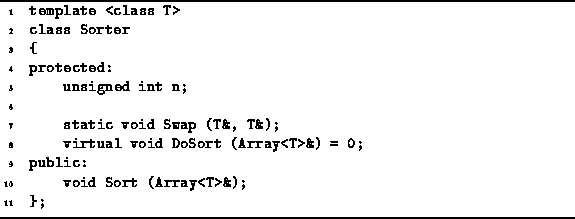
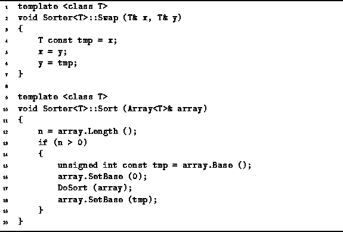

Data Structures and Algorithms
with Object-Oriented Design Patterns in C++
Data Structures and Algorithms
with Object-Oriented Design Patterns in C++The traditional way to implement a sorting algorithm is to write a function or procedure that sorts an array of data. This chapter presents an alternate, object-oriented approach that is based on the notion of an abstract sorter .
Think of a sorter as an abstract machine, the sole purpose of which is to sort arrays of data. A machine is an object. Therefore, it makes sense that we represent it as an instance of some class. The machine sorts data. Therefore, the class will have a member function, say Sort, which sorts an array of data.
Program  declares the abstract class template Sorter<T>.
The public interface of this class consists
of the single function Sort.
This function takes as its lone argument
a reference to an Array<T> instance
and it sorts the data contained therein.
We use the Array<T> class defined in Section
to represent the data to be sorted
because all array subscript operations
are bounds-checked and because we can determine the length
of the array by calling the Length member function
of the Array<T> class.
declares the abstract class template Sorter<T>.
The public interface of this class consists
of the single function Sort.
This function takes as its lone argument
a reference to an Array<T> instance
and it sorts the data contained therein.
We use the Array<T> class defined in Section
to represent the data to be sorted
because all array subscript operations
are bounds-checked and because we can determine the length
of the array by calling the Length member function
of the Array<T> class.

Program: Sorter Class Definition
Program also declares the member variable n,
the static member function Swap,
and the pure virtual function DoSort.
Since DoSort is a pure virtual function,
an implementation must be given in a derived class.
Program gives the implementations
for Sort and Swap.

Program: Sorter<T> class Swap and Sort Member Function Definitions
The Sort function does not sort the data itself. It is the DoSort routine, which is provided by a derived class, that does the actual sorting. The Sort routine merely sets things up for DoSort.
The Sort function takes a reference to an Array<T> instance which allows arbitrary array subscript ranges. E.g., the first element of an array a is the one at position a[a.Base()]. However, in most cases it is easier to write the sorting algorithm for a fixed lower bound of, say, zero, For this reason, the Sort function sets the array base to zero. Of course, the caller does not expect the array base to be changed. Therefore, the Sort routine restores the original array base before it returns.
The Swap function is used to implement most of the sorting
algorithms presented in this chapter.
The swap function takes two references to objects of some type T,
and exchanges the contents of these two objects.
The exchange is done as a sequence of three assignments.
Therefore, if a T instance can be assigned in constant time,
the Swap routine runs in constant time.
 Copyright © 1997 by Bruno R. Preiss, P.Eng. All rights reserved.
Copyright © 1997 by Bruno R. Preiss, P.Eng. All rights reserved.